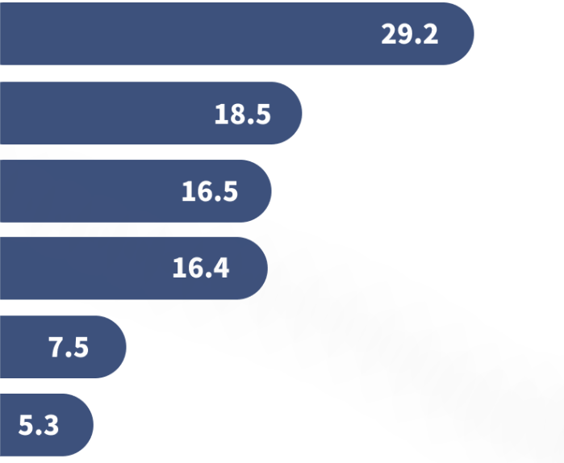
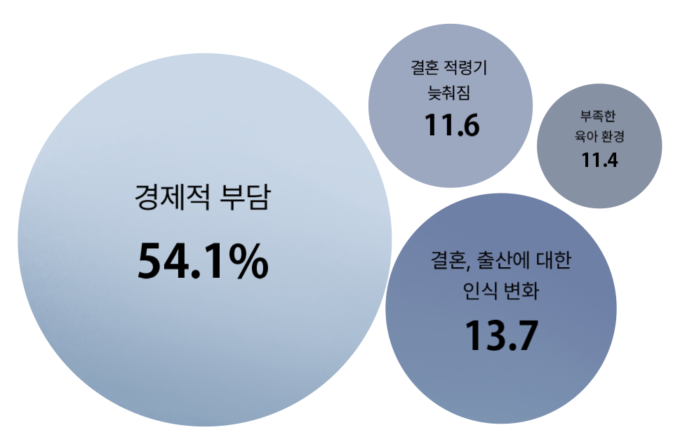

HOME
현황
원인
해결책
2030 미혼남녀가 보는 '저출산 이유'
육아로 인한 경제적 부담
사회, 미래에 대한 막막함
실효성 없는 국가 출산 정책
일과 가정 양립의 어려움
결혼의 지연과 기피
개인의 가치관

정부 지원?
출산 전후로
충분한 정부 지원을 받고 있다
정부가 출산을 유도하기 위해
내놓은 대책들은 출산 가능성이 높은
'아이를 가진 가정'과
'임신과 출산 적령기'인 이들에게
제대로 먹히지 않고 있는 셈이다
저출생의
주요 원인?
청년 실업과 불안정한 고용은
결혼과 출산을 미루게 하며,
높은 양육비와 집값 부담도
출산을 꺼리게 만든다.
보육 시설 부족과 육아 지원
미비로 일·육아 병행이 어려운 점,
개인주의적 가치관 확산과
여성에게 집중된 육아 부담도 주요 원인이다
